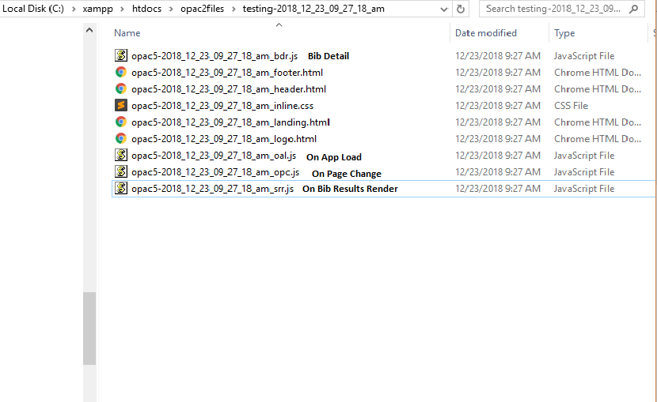

Using XAMPP running on localhost, create a folder called opac2files under htdocs
Place the 3 files index.html, info.png and create_html_js.php inside of the opac2files folder
Copy a opacconfig file to opac2files so you know have 4 files in opac2files folder. Name this opaconfig file something like opac5.json
I am using the 5 for opac JSON file because I could have others here as well from earlier or later.
Find the entry inside of php.ini that begins with post_max_size= and make this line read post_max_size=900M
I think 900M ( megabytes ) is large enough but I might be wrong for your code.
Restart the Apache module using the Control Panel or do it manually.
Browse to http://localhost/opac2files/index.html and you will see this text.
Click on Choose File at the top of this page and select your opacconfig JSON file. In my case it is opac5.json
When you see, "Files created successfully!" alert on this page check for a folder that has the name of the form testing-2018_12_23_09_27_18_am
Inside of this folder you will find all of your HTML, JS and inline CSS files also with a date and time stamp that have been created for you.
These files represent the individual "text areas" inside the Discovery Layer. Not all of them, just the most important ones for coding.

If you have a site host running Apache and PHP where you can make changes to the PHP.ini file, then it should run there as well.